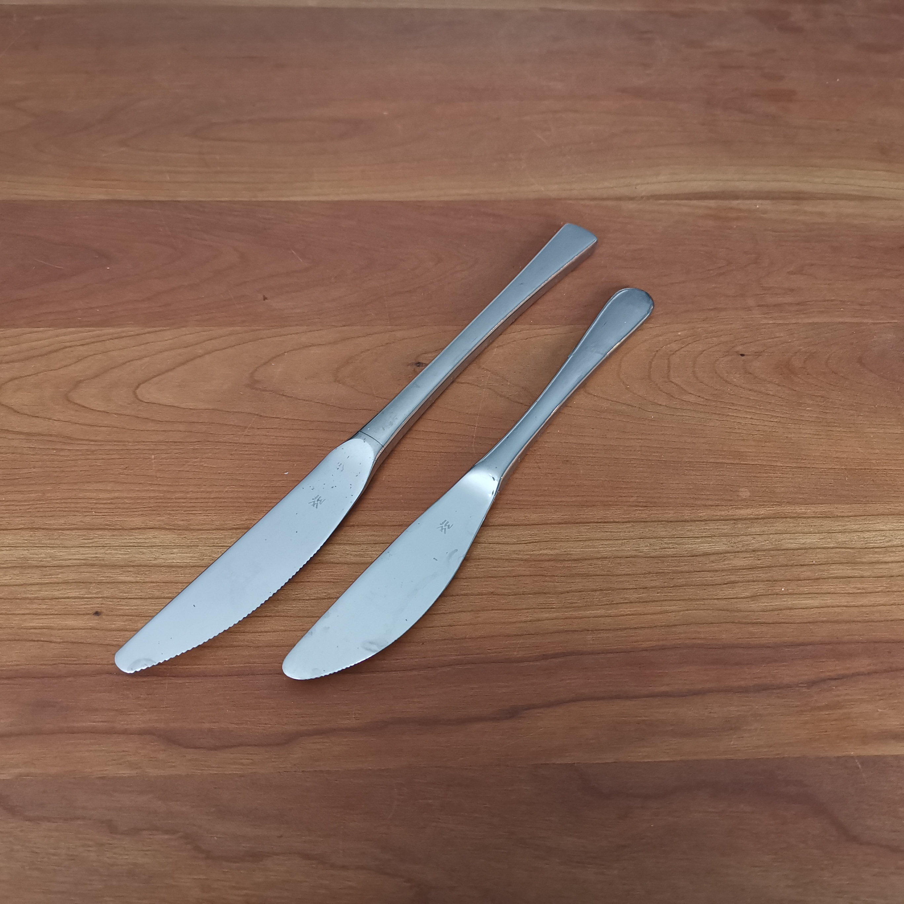
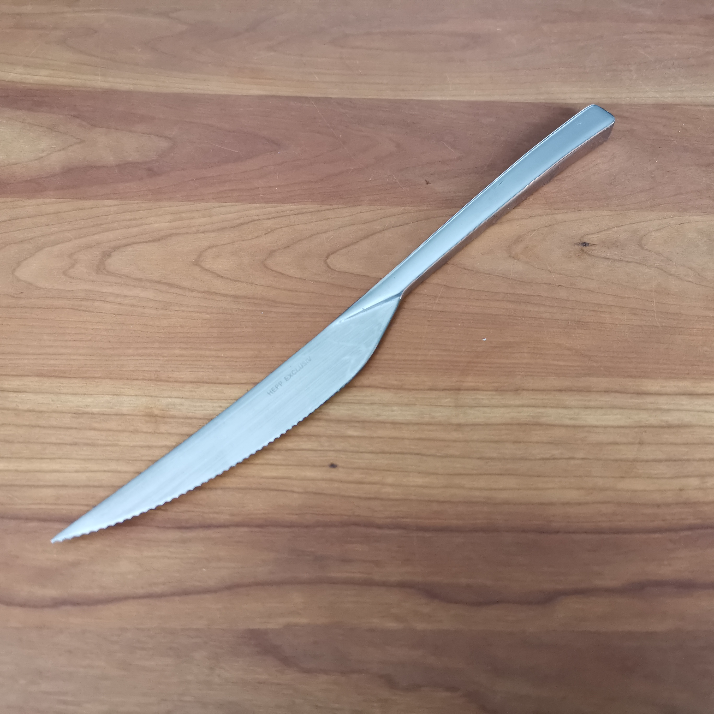
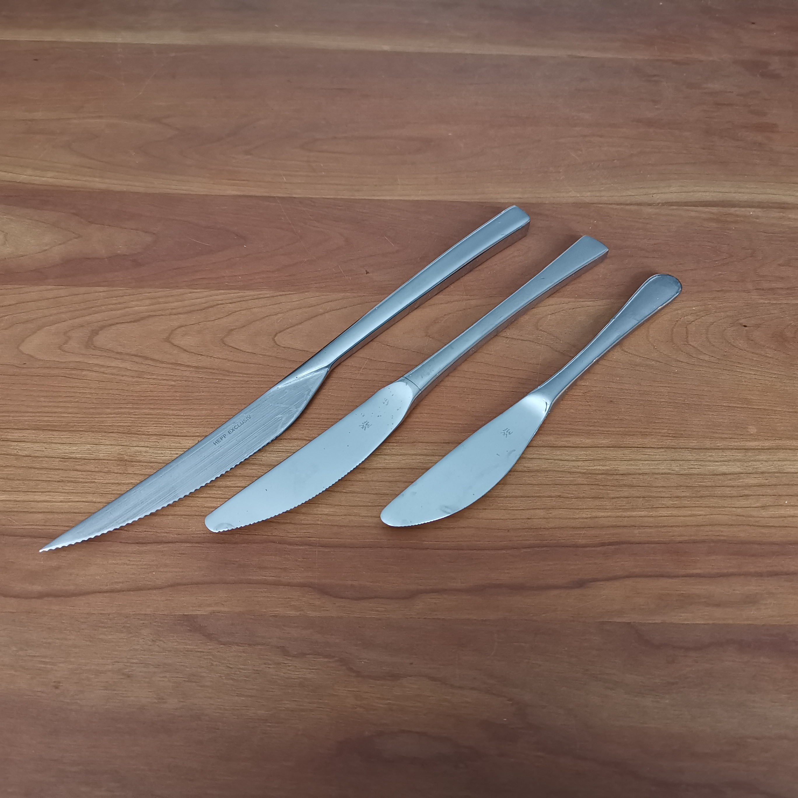

Voor beroepsmatig en particulier gebruik.
078 682 4977
info@horecaslijperijbloom.nl
TAFELMESSEN SLIJPEN
Tafelmessen zijn er in tientallen verschillende soorten, maten en merken. Met of zonder kartel, dik of dun, lang of kort. Wij kunnen ze allemaal slijpen. Wij maken uw messen weer scherp en voorzien ze weer van nieuwe kartels, zodat brood en vlees weer makkelijk te snijden zijn.

- 
TAFELMESSEN
Standaard tafelmessen met een kleine kartel in het lemmet, geschikt voor vrijwel alle groenten en vlees die je thuis of in een restaurant geserveerd krijgt.
- 
STEAKMES
Een tafelmes met iets grovere kartel in het lemmet, zoals de naam al zegt voornamelijk gebruikt voor steak, en andere hoogwaardige stukken vlees waar een normaal mes met moeite doorheen komt.
TAFELMES

Tafelmes met een grove kartel in het lemmet, voornamelijk gebruikt voor het snijden van hardere korsten (bijvoorbeeld stokbrood en pizza).
- 
OVERIGE
Natuurlijk zijn er nog veel andere soorten tafelmessen die wij ook slijpen. Vraag gerust naar onze mogelijkheden.